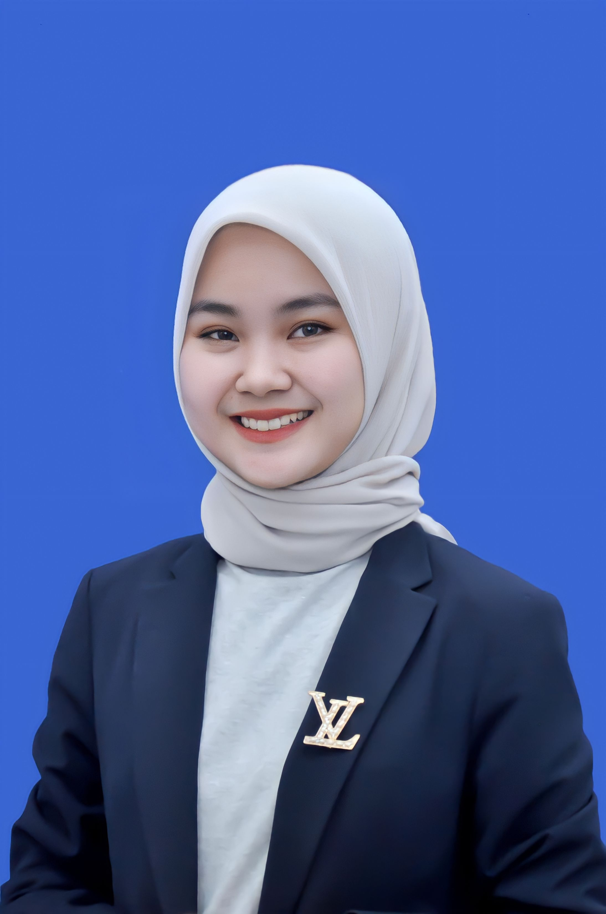
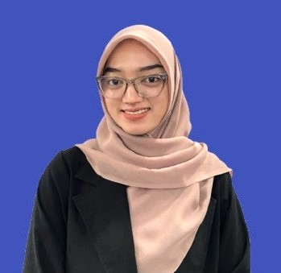

Instagram
Instagram  Facebook
Facebook  Tiktok
Tiktok Youtube
Youtube  Whatsapp
WhatsappHengki Wijaya, S.H
Direktur
PT. HILMAN DENISAR Pasifik dipimpin oleh bapak Hengki Wijaya, yang merupakan lulusan dari Universitas Pancasakti Tegal menjadi Sarjana Hukum (SH). Beliau telah berpengalaman di bidang Manning Agency sejak tahun 2005 dan saat ini menjadi ketua di Indonesia Maritime Crewing Agents Association (IMCAA).
Lulu Laela
Staff Keuangan
Lahir di Tegal. Berpengalaman dalam mengelola transferan gaji crew PT. HILMAN DENISAR

Adi Iwan Kuswandi
Staff SDMU
Lahir di JAKARTA. Beliau sudah berpengalaman sebagai Anak Buah Kapal selama 8 tahun, dan berpengalaman dalam penempatan awak kapal sesuai keahlian yang dibutuhkan owner kapal. Selain itu juga berpengalaman dalam memberikan arahan kepada calon awak kapal yang akan berangkat.
Novita Nur Iskandar
Kepala Divisi Operasional
Lahir di JAKARTA, Berpengalaman dalam hubungan komunikasi dengan agency luar negeri.
Sinta Ayu Nadilla
Staff Keuangan
Lahir di JAKARTA. Berpengalaman dalam mencatat, memeriksa, dan melaporkan serta mengelola laporan kas perusahaan PT. HILMAN DENISAR
Sahrul Kiram
Staff SDMU
Lahir di Sumenep. Berpengalaman dibidang penyeleksian calon awak kapal serta pemantauan crew kapal yang sudah berlayar.
Riski Ibnu Prayoga
Kepala Divisi SDMU
Lahir di P. Brandan. Berpengalaman dalam pengelolaan manajemen perusahaan PT. HILMAN DENISAR
Ogi Setio Handoko
Staff Operasional
Lahir di Bengkulu Utara. Beliau sudah berpengalaman sebagai Anak Buah Kapal selama 6 tahun dan berpengalaman dalam pengurus proses dokumen anak buah kapal
Amirul Haqie
Staff Operasional
Lahir di Pemalang. Berpengalaman dalam membantu operasional administrasi

Laela Hanifah
Staf Operasional
Lahir di JAKARTA. Berpengalaman dalam mengurus dan mengarsip dokumen pemberangkatan anak buah kapal PT. HILMAN DENISAR
Tri Givenda Oktavia
Staf Operasional
Lahir di BEKASI. Berpengalaman dalam memproses dokumen anak buah kapal
